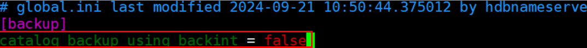

After the SAP HANA database is registered as an application to perform backup, the database backup mode is configured to the Backint mode. If the database is re-registered as a general database, the file mapping is incorrect and the backup fails.
The configuration items of Backint are not cleared.
su - s00adm
hdbsql -i 00 -n localhost:30013 -d SYSTEMDB -u SYSTEM -p Password customized by the user during database installation
alter system alter configuration ('global.ini', 'SYSTEM') set ('backup', 'catalog_backup_using_backint') = 'false';
alter system alter configuration ('global.ini', 'SYSTEM') set ('backup', 'log_backup_using_backint') = 'false';
rm -rf /home/hana/shared/S00/global/hdb/opt/*
vi /home/hana/shared/S00/global/hdb/custom/config/DB_LTT/global.ini
The following is an example of the command output:

HDB stop
HDB start